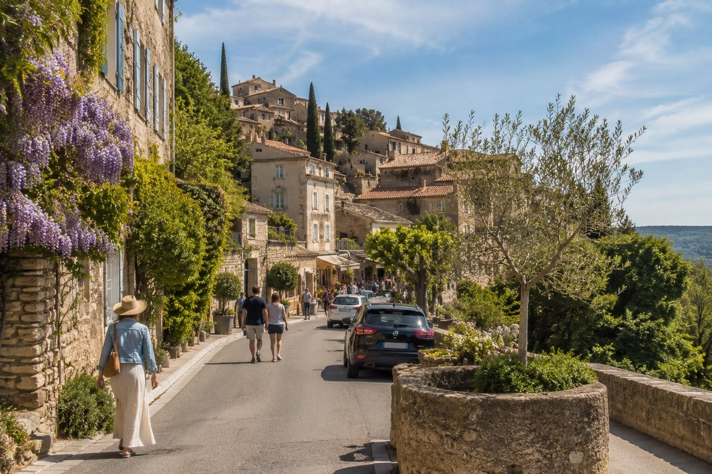

1
Redo för publicering
Hög prio · 283
Strand
provence
✈️ Praktiskt från Sverige
bilder/web-ready/provence/praktiskt-fran-sverige-provence.jpg
bilder/web-ready/provence/redo/praktiskt-fran-sverige-provence.jpg
Prompt
Publishing metadata
- Prioritet
- Hög (283) · bas 10 | startsida +130 | prioriterad sida +45 | matchar sidtitel/H1 +80
- Alt
- Praktiskt från Sverige i Provence med människor och realistisk resemiljö
- Caption
- Praktiskt från Sverige i Provence
- SEO
- En realistisk resebild från Praktiskt från Sverige i Provence. Bilden visar Praktiskt från Sverige i Provence under relevant resesäsong med naturligt folkliv och tydliga platsdetaljer som gör reseguideavsnittet mer visuellt trovärdigt.
- Target
- https://provence.se/ / praktiskt-fran-sverige